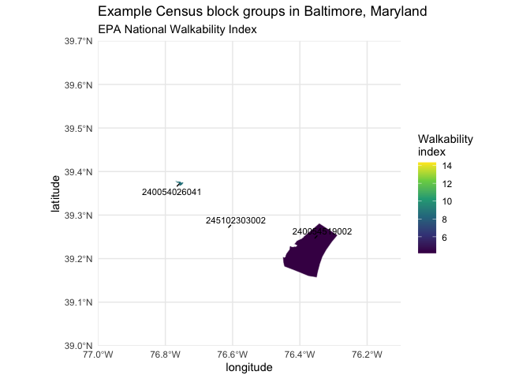

actiwalkability provides helpers for querying the EPA Walkability Index and working with Census GEOID/FIPS identifiers.
Core entry points:
-
ww_epa_walkability()for querying the EPA Walkability Index ArcGIS layer -
ww_fips15()andww_fips12()for composing Census FIPS/GEOID strings
Installation
You can install actiwalkability from GitHub with:
# install.packages("remotes")
remotes::install_github("jhuwit/actiwalkability")Quick start
The EPA index is reported for Census block groups. Start with an address lookup that contains 12-character, Census 2010 block-group GEOIDs; keep these identifiers as character values so leading zeroes are retained.
library(actiwalkability)
addresses <- dplyr::tibble(
address_id = c("address_1", "address_2", "address_3"),
geoid = c("240054519002", "240054026041", "245102303002")
)
knitr::kable(addresses)| address_id | geoid |
|---|---|
| address_1 | 240054519002 |
| address_2 | 240054026041 |
| address_3 | 245102303002 |
If state, county, tract, and block identifiers are available instead, create a block-group GEOID with acti_fips12():
acti_fips12(state = 24, county = 510, tract = 60400, block = 2002)
#> [1] "245100604002"Query the EPA layer with the unique GEOIDs. This is a live service request; the chunk is cached so subsequent README renders reuse the saved result.
walkability <- acti_epa_walkability(
unique(addresses$geoid),
geometry = FALSE,
fields = c("GEOID10", "NatWalkInd")
)
knitr::kable(dplyr::select(
as.data.frame(walkability),
GEOID10, NatWalkInd, cat_walk_index
))| GEOID10 | NatWalkInd | cat_walk_index |
|---|---|---|
| 240054519002 | 4.166667 | [1,5.75] |
| 245102303002 | 14.333333 | (10.5,15.2] |
| 240054026041 | 8.666667 | (5.75,10.5] |
Join the returned index values back to the address lookup:
address_walkability <- dplyr::left_join(
addresses,
walkability,
by = c("geoid" = "GEOID10")
)
knitr::kable(dplyr::select(
address_walkability,
address_id, geoid, NatWalkInd, cat_walk_index
))| address_id | geoid | NatWalkInd | cat_walk_index |
|---|---|---|---|
| address_1 | 240054519002 | 4.166667 | [1,5.75] |
| address_2 | 240054026041 | 8.666667 | (5.75,10.5] |
| address_3 | 245102303002 | 14.333333 | (10.5,15.2] |
Map the example block groups
The EPA values are joined to Census TIGERweb 2010 block-group boundaries, the boundary vintage that matches GEOID10. The hard-coded plot extent provides the wider Baltimore, Maryland context, while keeping the README dependencies small. This query is cached in the README.
census_block_groups <- arcgislayers::arc_open(
"https://tigerweb.geo.census.gov/arcgis/rest/services/Census2020/Tracts_Blocks/MapServer/5"
)
census_where <- paste0(
"GEOID IN (",
paste0("'", unique(addresses$geoid), "'", collapse = ", "),
")"
)
block_groups_2010 <- arcgislayers::arc_select(
census_block_groups,
where = census_where,
geometry = TRUE,
fields = c("GEOID", "INTPTLAT", "INTPTLON")
) |>
dplyr::rename(GEOID10 = GEOID)
walkability_map <- dplyr::left_join(
block_groups_2010,
dplyr::select(as.data.frame(walkability), GEOID10, NatWalkInd),
by = "GEOID10"
)
walkability_labels <- dplyr::mutate(
as.data.frame(walkability_map),
longitude = as.numeric(INTPTLON),
latitude = as.numeric(INTPTLAT)
)
ggplot2::ggplot() +
ggplot2::geom_sf(
data = walkability_map,
ggplot2::aes(fill = NatWalkInd),
colour = "white"
) +
ggrepel::geom_text_repel(
data = walkability_labels,
ggplot2::aes(longitude, latitude, label = GEOID10),
seed = 2026,
min.segment.length = 0,
size = 3
) +
ggplot2::scale_fill_viridis_c(name = "Walkability\nindex") +
ggplot2::coord_sf(
crs = 4326,
default_crs = 4326,
xlim = c(-77, -76.1),
ylim = c(39, 39.7),
expand = FALSE
) +
ggplot2::labs(
title = "Example Census block groups in Baltimore, Maryland",
subtitle = "EPA National Walkability Index"
) +
ggplot2::theme_minimal()